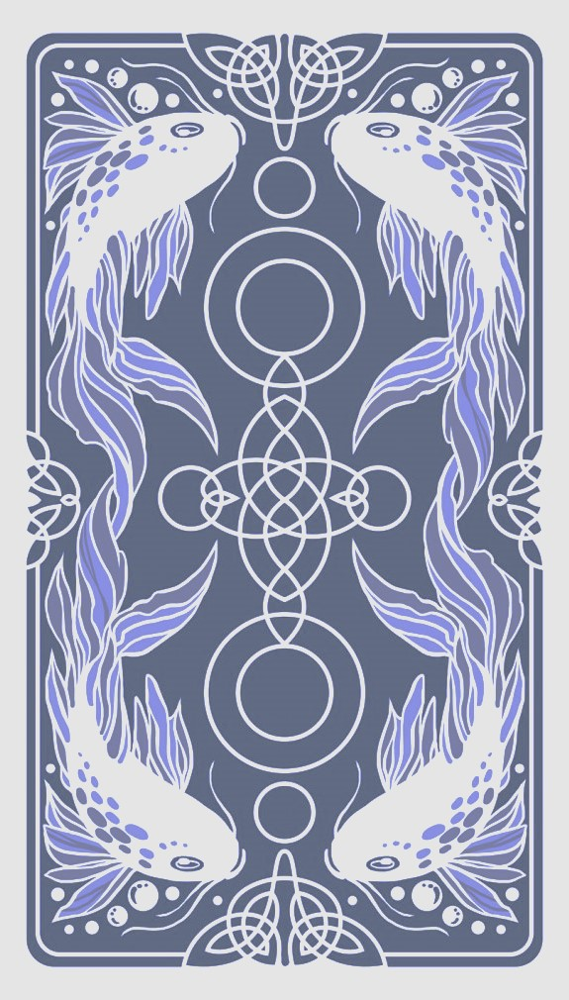
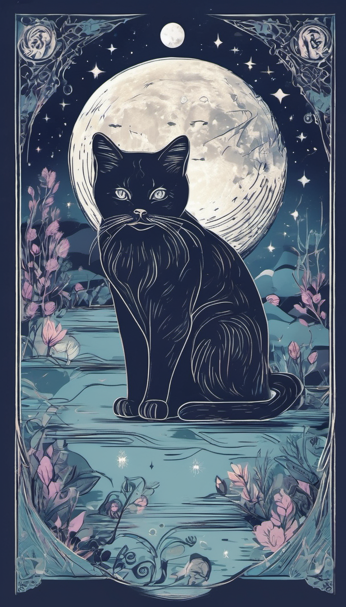

Узнайте свою судьбу
Карты таро — колода карт, используемая с середины XIV века в различных частях Европы для карточных игр, во многие из которых играют и сегодня. С конца XVIII века карты таро стали использоваться и для предсказания.


Виды предлагаемых раскладов:
- Ежедневный
- Еженедельный
- Любовный
- Для работы
- Ответ на вопросы